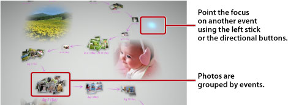

Viewing photos
When you start Photo Gallery, all of the photos that are saved in the system storage of the PS3™ system are automatically analyzed and grouped by events. Photos are grouped into events based on the date and time of the photos.
Selecting events
Move from photo to photo or from event to event using the left stick or the directional buttons. You can select multiple photos or events by pressing the  button with each selection.
button with each selection.

Changing the way photos are displayed
To change the way the photos are displayed, select groups or events, and then press the  button. The display changes as shown in the images that follow. To go back to a previous display, press the
button. The display changes as shown in the images that follow. To go back to a previous display, press the  button.
button.
Hint
When a photo is displayed in full-screen mode, you can access the control panel used under the  (Photo) category in the XMB™ screen by pressing the
(Photo) category in the XMB™ screen by pressing the  button. You can then use the available control panel options on the displayed photo.
button. You can then use the available control panel options on the displayed photo.
Viewing photos as a slideshow
To play a slideshow of your photos, select a playlist or an event from [Library Area], press the button, and then select  (Slideshow). From the screen that is displayed, set the slideshow options described below, and then select [Start].
(Slideshow). From the screen that is displayed, set the slideshow options described below, and then select [Start].
| Slideshow Style | Select how you want the photos to be displayed in the slideshow. |
|---|---|
| Slideshow Speed | Select the slideshow speed. |
| Sort | Select the order of the photos. |
| Slideshow Music | Select the music to play in the background during the slideshow from music content that is provided with the Photo Gallery application. |
 |
Select the music to play in the background during the slideshow from the  (Music) category in the XMB™ screen. (Music) category in the XMB™ screen. |
Hints
- During a slideshow, you can access the control panel for the (Photo) category by pressing the button. You can then use the available control panel options on the slideshow.
- When photos are displayed in [Library Area], you can select [Similarity] under [Sort] to order the photos based on similarity of the images.
Changing the background music
You can change the music that is played in the background while you view your photos. Press the PS button on the wireless controller to display the XMB™ screen, go to (Music), and then select the music file that you want to play.
Hints
- To change the background music for a slideshow, select the music that you want to play before starting the slideshow.
- While using Photo Gallery, if you select a music track that is saved on storage media as the background music and then start a slideshow, the track may not play again after the slideshow is finished.